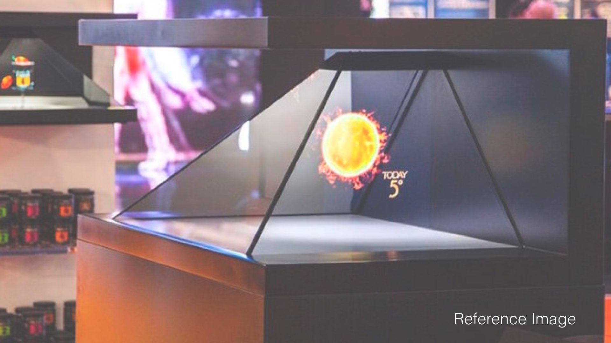
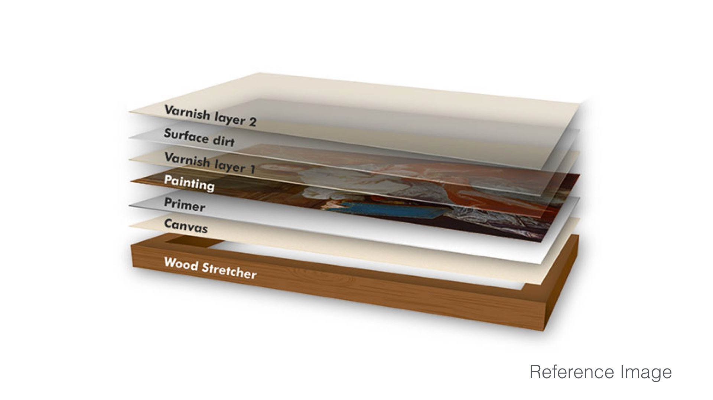
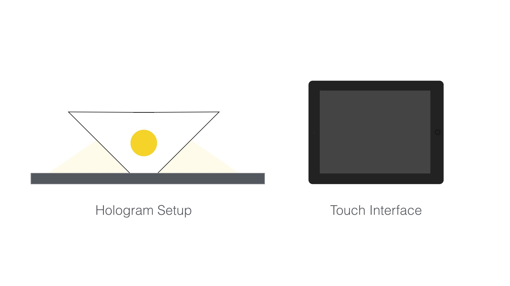

A Holographic Interface for Museum exhibits. Research collaboration with the Art Conservation Centre at The Chhatrapati Shivaji Maharaj Vastu Sangrahalaya (CSMVS) in Mumbai, formerly known as the Prince of Wales Museum.
Work in Progress
Almost all museums consist of a large number of artifacts that are not exhibited, many a times due to reasons of wear and tear, other times due to lack of space. Museums are on an average able to display only 5% of the total number of artifacts they withhold. The ongoing research project in collaboration with the CSMVS Museum's Art Conservation Centre in Mumbai, aims to use technological interventions to display the undisplayed artifacts. The first phase of this project involves creation of a holographic interface for 3 Dimensional objects in the Museum. The project will be on display at the ConservArte Exhibition 2016.
Early Experiments
Techniques
A holographic interface to display the 3D objects as well as painting details in the exhibition. This can also be used to show the objects and processes of conservation by means of exploded views.


Technology
The technology consists of 2 components i.e. the setup for the holographic display and a touchscreen to interact with the hologram.

Process
The process involves generating 360 Degree high resolution holograph friendly videos of 15-20 artifacts in the first phase. Along with this, an application would be created to navigate artifacts and display the relevant holograph in the setup.
Tags
Hologram, New media, Visualization, Research, Museum, CSMVS, Mumbai, Conservation, 360 degree, Artifacts, User Interface, User Experience, Microinteraction, Interaction Design, Application, Prototype, The Chhatrapati Shivaji Maharaj Vastu Sangrahalaya, Prince of Wales Museum